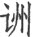

罗、富楼那弥多罗尼子、须菩提、优波尼沙陀等而为上首
(10)
。复有无量辟支无学
(11)
，并其初心
(12)
，同来佛所，属诸比丘
(13)
，休夏自恣
(14)
；十方菩萨
(15)
，谘决心疑
(16)
，钦奉慈严
(17)
，将求密义。即时如来敷座宴安
(18)
，为诸会中宣示深奥。法筵清众得未曾有，迦陵仙音遍十方界
(19)
。恒沙菩萨来聚道场，文殊师利而为上首。
罗、富楼那弥多罗尼子、须菩提、优波尼沙陀等而为上首
(10)
。复有无量辟支无学
(11)
，并其初心
(12)
，同来佛所，属诸比丘
(13)
，休夏自恣
(14)
；十方菩萨
(15)
，谘决心疑
(16)
，钦奉慈严
(17)
，将求密义。即时如来敷座宴安
(18)
，为诸会中宣示深奥。法筵清众得未曾有，迦陵仙音遍十方界
(19)
。恒沙菩萨来聚道场，文殊师利而为上首。卷一内容是本经的发起以及三番破识、十番显见等，这三个内容又是通过佛陀从顶上、面门和胸前卍字的三次放光而逐次宣说的。
本经的发起是由于阿难尊者的一段因缘。序分中说，在七月十五解夏自恣日这一天，按照印度的习俗，民众普遍供养僧众，阿难因故没参加集体应供，单独外出托钵乞食，结果途中遭遇摩登伽女的大幻术，险些毁戒失身，佛派文殊菩萨持咒解救了阿难，文殊菩萨把阿难和摩登伽女带到佛前，阿难恳请佛陀慈悲开示，佛于是宣说了这部《楞严经》。这个发起因缘，按照传统注疏的解释，喻示了本经的几个重要主题：（一）破魔。从开始文殊菩萨持楞严咒帮助阿难破除魔障，到中间抉择正见以摧破邪见，至最后佛陀特别讲说五十阴魔，使得本经成为了著名的破魔大全。（二）禅定修习。阿难遭魔的原因是由一向求多闻而未能实修禅定，故在境界面前无力破除，因此请佛陀详细开示能够成就菩提的“妙奢摩他、三摩、禅那最初方便”，佛告诉阿难“有三摩提，名大佛顶首楞严王，具足万行，十方如来一门超出，妙庄严路”，开启了本经详细讲述禅定修习法门，并分为抉择真见、圆通法门、楞严咒、菩提道次第等科而详细解说，使得本经成为了著名的禅修宝典。（三）护戒。阿难因为遭魔而险些破了不淫欲戒，幸得楞严咒以破除，因此本经特别强调持清净戒律，而且本经历来被认为对于护戒具有重要意义。
在回答阿难提出的禅定法门最初方便中，佛陀首先抉择正见——“如来密因”，即“一切众生从无始来，生死相续，皆由不知常住真心，性净明体，用诸妄想，此想不真，故有轮转”。随后通过辨析真妄而破除妄识，逐步显示此常住真心之真见。分为三个内容：（一）破妄显真。佛七次征问阿难“心在何处”，从而辨析说明：一心不在身内；二心不在身外；三心不潜根里；四心不随明暗开合；五心不是思维体，随与外境相合而有；六心不在中间；七不能以一切无著名之为心。此即是《楞严经》脍炙人口的“七处征心”。（二）抉择一切众生的二种根本：“一者无始生死根本”，即众生无始以来都以妄想攀缘心为自心性，这是众生流转生死的根本原因；“二者无始菩提涅槃元清净体”，即众生本具的常住真心、妙明心体，这是众生解脱的根本原因。以上两个内容，有的注家也以“三番破识”来解释。（三）十番显见。“见”即“见性”，眼根能看见之所依根性。在眼根为“见性”，在耳根为“闻性”，实际上即是觉性。通过十个方面的层层递进抉择，显示心之真性：一显见是心；二显见不动；三显见不灭；四显见不失；五显见无还；六显见不杂；七显见无碍；八显见不分；九显见超情；十显见离见。其中一、二在卷一。
如是我闻
(1)
。一时
(2)
，佛在室罗筏城祇桓精舍
(3)
，与大比丘众千二百五十人俱
(4)
，皆是无漏大阿罗汉
(5)
。佛子住持
(6)
，善超诸有
(7)
，能于国土，成就威仪。从佛转轮，妙堪遗嘱，严净毗尼
(8)
，弘范三界
(9)
，应身无量，度脱众生，拔济未来，越诸尘累。其名曰大智舍利弗、摩诃目犍连、摩诃拘
罗、富楼那弥多罗尼子、须菩提、优波尼沙陀等而为上首
(10)
。复有无量辟支无学
(11)
，并其初心
(12)
，同来佛所，属诸比丘
(13)
，休夏自恣
(14)
；十方菩萨
(15)
，谘决心疑
(16)
，钦奉慈严
(17)
，将求密义。即时如来敷座宴安
(18)
，为诸会中宣示深奥。法筵清众得未曾有，迦陵仙音遍十方界
(19)
。恒沙菩萨来聚道场，文殊师利而为上首。
注释：
(1) 如是我闻：意为如此的教法是我阿难亲自从佛陀那里听闻的。这是为了使听法的人生起信顺。据佛教经论上记载，释迦牟尼佛将要入灭的时候，阿难请问四事：“一佛灭度后，诸比丘等以何为师？二诸比丘依何住？三恶性比丘云何共居？四一切经首置何字？”佛回答说：“一依四念处住。二以戒为师。三默摈恶性比丘。四一切经首置‘如是我闻’等言。”（《大智度论》卷二）又佛经篇首的通序具备六项内容：如是、我闻、说法的时间、说法人、地点、听众等，这称为“六事成就”。即：“如是”，是信成就；“我闻”，是闻成就；“一时”，是时成就；“佛”，是主成就；“室罗筏城祇桓精舍”，是处成就；“与大比丘众千二百五十人俱”，是众成就。此六事是所有佛经通用的序分，故称“通序”；又因其乃证实该经确为佛说，诚属可信，故又称“证信序”。
(2) 一时：指佛说法的那时，不能定指何时，唯以机教相投，师资会合之际，总名“一时”。
(3)
室罗筏（fá）城：即舍卫城（Sravasti），北 萨罗国（Kosala）之都城。佛陀在世时，波斯匿王统治此国。佛陀在此前后居止二十五年，留有许多佛教胜迹。祇桓（qí huán）精舍：即“祇树给孤独园”之略称，也称“祇园精舍”（Jetavana），在舍卫城之南。此精舍是由给孤独长者以金布地购买祇陀太子之园而建精舍，供养佛陀及弟子，而祇陀太子也以园中之树供养，故合称“祇树给孤独园”。佛陀曾于此度过许多雨季，讲说了《阿含经》、《弥勒下生经》、《弥勒上生经》、《阿弥陀经》、《文殊般若经》、《金刚般若经》等诸多大小乘经典。“祇桓精舍”与王舍城的“竹林精舍”并称为佛教早期的两大精舍。
萨罗国（Kosala）之都城。佛陀在世时，波斯匿王统治此国。佛陀在此前后居止二十五年，留有许多佛教胜迹。祇桓（qí huán）精舍：即“祇树给孤独园”之略称，也称“祇园精舍”（Jetavana），在舍卫城之南。此精舍是由给孤独长者以金布地购买祇陀太子之园而建精舍，供养佛陀及弟子，而祇陀太子也以园中之树供养，故合称“祇树给孤独园”。佛陀曾于此度过许多雨季，讲说了《阿含经》、《弥勒下生经》、《弥勒上生经》、《阿弥陀经》、《文殊般若经》、《金刚般若经》等诸多大小乘经典。“祇桓精舍”与王舍城的“竹林精舍”并称为佛教早期的两大精舍。
(4) 比丘：梵文bhiksu的音译，又译“苾刍”等，意译作“乞士”、“除士”等，指受了具足戒的男性出家者。又比丘语义有五种：一、乞士（行乞食以清净自活者）；二、破恶（破烦恼）；三、出家人；四、净持戒；五、怖魔。（《大智度论》卷三）又“大比丘”指已证得阿罗汉道的比丘僧。千二百五十人：佛陀的常随众，共一千二百五十五人，这里是取整数而言。
(5) 无漏：漏，即是烦恼之异名。贪、嗔等烦恼，日夜由眼、耳等六根门漏泄不止，故称为“漏”。又烦恼能令人落入三恶道，也称为“漏”。因此称有烦恼之法为“有漏”；称离烦恼垢染之清净法为“无漏”，如涅槃、菩提及一切能断除三界烦恼之法，均为无漏。阿罗汉：梵文arhat的音译，其义为：一、应，应断烦恼、应受供养、应不复受分段生，通常只说应供；二、杀贼，能断三界见思惑，杀烦恼之贼；三、无生，烦恼不再生起，不再来三界受生。阿罗汉为小乘之最高果位，然通于三乘。又阿罗汉分为“慧解脱”和“俱解脱”两种，慧解脱阿罗汉是依慧力证入法性，无明等障得解脱；俱解脱阿罗汉则同时获得定、慧解脱，故灭尽定之力，使贪爱等障也得解脱，获得三明六通等殊胜功德。经中的“大阿罗汉”，通常即指俱解脱阿罗汉。
(6) 佛子：指能绍继佛法，拔济众生。《法华经》卷二：“真是佛子，从佛口生，从法化生，得佛法分，堪绍佛种。”这里是指大阿罗汉们。住持：持佛法藏，令法久住。
(7) 诸有：指迷界之万象差别。可分三有、四有、七有、九有、二十五有等。三有，即欲有、色有、无色有，义同“三界”。一、欲有，欲界天、人、阿修罗、畜生、饿鬼、地狱，各随其业因而受果报，称为“欲有”；二、色有，色界四禅诸天，虽离欲界粗染之身，而有清净之色，称为“色有”；三、无色有，无色界四空诸天，虽无色质为碍，亦随所作之因，受其果报，称为“无色有”。
(8) 毗尼：梵文Vinaya的音译，新译“毗奈耶”，佛教戒律之总称。
(9) 三界：即欲界、色界、无色界。
(10)
舍利弗：释迦牟尼佛的十大弟子之一，以“智慧第一”著称。摩诃目犍连：“摩诃”即“大”之义，释迦牟尼佛的十大弟子之一，以“神通第一”著称。摩诃拘 罗：即舍利弗的舅父长爪梵志，在佛的弟子中，以四辩才著称。富楼那弥多罗尼子：又称“富楼那”，意译为“满慈子”，释迦牟尼佛的十大弟子之一，以“说法第一”著称。须菩提：意为“空生”、“善现”，释迦牟尼佛的十大弟子之一，以“解空第一”著称。优波尼沙陀：意为“尘性”，因悟尘性是空而得道。
罗：即舍利弗的舅父长爪梵志，在佛的弟子中，以四辩才著称。富楼那弥多罗尼子：又称“富楼那”，意译为“满慈子”，释迦牟尼佛的十大弟子之一，以“说法第一”著称。须菩提：意为“空生”、“善现”，释迦牟尼佛的十大弟子之一，以“解空第一”著称。优波尼沙陀：意为“尘性”，因悟尘性是空而得道。
(11) 辟支：辟支佛，梵文pratyeka-buddha的音译，意译为“缘觉”、“独觉”，指无师而能自觉自悟的圣者。有二义：一、独觉辟支佛，出生于无佛之世，但因前世修行的因缘，自以智慧得道；二、因缘觉辟支佛，不从他闻而自出智慧，借飞花落叶等因缘而觉悟得道。（《大智度论》卷十八）无学：“有学”之对称，又称“无学位”。若已知佛之教法，但未断惑，尚有所学者，称为“有学”。若已解脱一切烦恼，证尽智、无生智，更无可学的阿罗汉果，则称为“无学”。又缘觉及佛亦断尽一切烦恼，无可学，故亦称“无学”。
(12) 初心：初发心学佛者。
(13) 属（zhǔ）：会合，聚集。
(14) 休夏：即解夏，七月十五日结束夏安居。佛制比丘每年四月十六日至七月十五日进行夏安居，即固定在某处静修而不外出乞食行化。夏安居三月期满当日，僧众齐集，当众作自我检讨，或听任他人来检举自己的过失，此谓“自恣”（恣，音zì，恣任，听任，任凭）。举行自恣仪式的这一天，称为“自恣日”。
(15) 菩萨：梵文bodhi-sattva音译，“菩提萨埵”的略称，新译为“觉有情”。菩提，觉、智、道之意；萨埵，众生、有情之义，即求大觉的有情众生，大道心有情。
(16) 谘（zī）：同“咨”，征询。
(17) 钦（qīn）：恭敬。慈严：喻慈母严父。
(18) 如来：梵文tathagata，音译“多陀阿伽陀”等。意为由真理而来（如实而来），由真如而成正觉，故尊称佛陀为“如来”。又作“如去”，为佛十号之一。
(19) 迦陵仙音：迦陵频伽，印度的仙鸟，音声和雅美妙，以其比喻佛之妙音。
译文：
这部经是我亲自听佛讲的。有一天，佛在舍卫城的祇园精舍，与大比丘众一千二百五十人在一起，都是已断除一切生死烦恼、证得无漏果位的大阿罗汉。这些大比丘乃是真佛子，住持如来正法，善于出离三界，能于此娑婆国土，三业无亏，六尘不染，成就种种清净威仪。他们从佛受教，智慧深妙，堪能继承佛的遗愿，转正法轮，度化众生；各戒行严净，堪为三界众生之师范；他们示现各种应化之身，度生济世，利益未来世的众生，超越尘累而得解脱。其中，大智舍利弗、大目犍连、大拘 罗、富楼那弥多罗尼子、须菩提、优波尼沙陀等为上首弟子。当时，适值夏安居期满之日，还有许多缘觉众及初发心的学人也来到佛的住所，会合到比丘僧团中，参加夏安居期满的自恣法会；十方世界的菩萨也前来亲近佛陀，咨决心中疑问，都恭敬奉事如来，想要探求佛法之深义奥旨。其时佛陀展坐具安详趺坐，为与会大众开示佛法奥旨。法席大众同沾法益，得未曾有。佛说法的声音像迦陵频伽鸟的鸣叫声一样柔和美妙，遍至十方。无数的菩萨都闻声前来参加法会，其中，以文殊师利菩萨而为上首。
罗、富楼那弥多罗尼子、须菩提、优波尼沙陀等为上首弟子。当时，适值夏安居期满之日，还有许多缘觉众及初发心的学人也来到佛的住所，会合到比丘僧团中，参加夏安居期满的自恣法会；十方世界的菩萨也前来亲近佛陀，咨决心中疑问，都恭敬奉事如来，想要探求佛法之深义奥旨。其时佛陀展坐具安详趺坐，为与会大众开示佛法奥旨。法席大众同沾法益，得未曾有。佛说法的声音像迦陵频伽鸟的鸣叫声一样柔和美妙，遍至十方。无数的菩萨都闻声前来参加法会，其中，以文殊师利菩萨而为上首。
时波斯匿王 (1) ，为其父王讳日营斋 (2) ，请佛宫掖 (3) ，自迎如来，广设珍馐无上妙味，兼复亲延诸大菩萨 (4) 。城中复有长者居士同时饭僧 (5) ，伫佛来应 (6) 。佛敕文殊分领菩萨及阿罗汉应诸斋主 (7) 。唯有阿难先受别请 (8) ，远游未还，不遑僧次 (9) ，既无上座及阿阇黎 (10) ，途中独归。
注释：
(1)
波斯匿王：中印度 萨罗国国王，与释迦牟尼同时代人，住舍卫城，为佛教僧团的大外护。
萨罗国国王，与释迦牟尼同时代人，住舍卫城，为佛教僧团的大外护。
(2) 讳日：即忌日，逝世纪念日。
(3) 宫掖（yē）：即指皇宫。掖，偏殿或后宫，宫掖即指正宫与后宫等，统指皇宫。
(4) 延：邀请，迎接。
(5) 长者：印度一般指豪族、巨富，或年高德劭者为长者。居士：居财之士或居家有道之士，后指归依佛门的在家众。古来常与所称之长者混同。
(6) 伫（zhù）：等候。
(7) 敕（chì）：令也。
(8) 阿难：又译“阿难陀”，意为“庆喜”等。系佛陀的堂弟，出家后二十余年间为佛的侍者，对于佛的说法多能明记，故在佛的十大弟子中被誉为“多闻第一”。佛入灭之后结集三藏时，阿难诵出经藏。阿难是本经的当机者。
(9) 遑（huánɡ）：及，赶上。
(10) 上座：对出家比丘戒腊超过十夏或二十夏者的尊称。阿阇（shé）黎：梵文acarya，意为“轨范师”，即教授弟子使行为端正合宜，而自身又堪为师范楷模，故又称“导师”。
译文：
那天正是波斯匿王之父的逝世纪念日，波斯匿王为超荐其父王，特地在宫中举办了盛大的斋会，准备了丰盛的美味佳肴，亲自到佛的住所恭迎佛陀到宫中应供，同时也亲自恭迎诸大菩萨一起来应供。其时，舍卫城的许多长者居士也同时设斋，大家都热切地等候佛陀及诸大菩萨、阿罗汉前来应供。佛即命文殊菩萨率领与会的诸大菩萨和阿罗汉，分别到各处去应供。只有阿难一人，自恣之前先受别请，远出没有回来，未能赶上僧众应供的行列，没有上座比丘和亲教师同行，途中独自一人归来。
其日无供，即时阿难执持应器 (1) ，于所游城，次第循乞。心中初求最后檀越以为斋主 (2) ，无问净秽 (3) ，刹利尊姓及旃陀罗 (4) ，方行等慈 (5) ，不择微贱，发意圆成一切众生无量功德。阿难已知，如来世尊诃须菩提及大迦叶 (6) ，为阿罗汉心不均平，钦仰如来开阐无遮，度诸疑谤，经彼城隍 (7) ，徐步郭门 (8) ，严整威仪，肃恭斋法。
注释：
(1) 应器：应量器，梵文patra，音译“钵多罗”，略称“钵”。其材料、颜色、大小均有定制，为如法之食器，应受人天供养所用之食器，又为应腹分量而食之食器，故称“应量器”。
(2) 檀越：即施主。檀，即梵文“檀那”，布施之义；越，超越，布施获福而超越贫穷，故称施主为“檀越”。
(3) 净秽：指净家和秽家。净家，指高种姓之家。秽家，指低种姓之家以及娼优家、屠户、卖酒家、妓院等。
(4) 刹利尊姓：古印度是一个严分种姓的社会，分为婆罗门、刹帝利、吠舍、首陀罗四种姓。“刹利”即“刹帝利”种姓，是王者贵族种姓。旃（zhān）陀罗：是首陀罗种姓中的贱族，意为“屠者”、“恶人”。
(5) 方：法也，效法。
(6) 诃须菩提及大迦叶（shè）：过去须菩提乞食，舍去贫家，专乞富家。因为怕富家堕落了善根，让他们继续种福田。大迦叶则专乞贫家，不乞富家。因为怜悯贫家，让他们多种福田，好转贫为富。如来为此曾责备他们二人，身为阿罗汉应当以平等心对待一切，不应当心不均平，分别乞食。大迦叶，意为“饮光”，释迦牟尼佛的十大弟子之一，以“头陀第一”著称。佛陀入灭后，于王舍城主持召集第一次经典结集。
(7) 城隍（huánɡ）：城墙和护城河、城壕。此处指城边。
(8) 郭门：外城门。郭，外城。
译文：
这天阿难因没有参加应供，即捧持钵器，于所经过的城中，按户依次乞食。阿难心想，今天托钵，但求最后一家尚未供佛菩萨的施主作为斋主，而不论施主是净家，还是秽家，是属于刹帝利尊姓之族，还是属于旃陀罗低贱之族，效法佛陀平等慈悲，不拣择种姓微贱之家，让他们都有种福修善的机会，发心圆成一切众生的无量功德。阿难知悉佛曾呵责须菩提和大迦叶身为阿罗汉，行乞时心仍存有舍贫就富和舍富就贫之差别，十分钦敬佛陀的无量慈心和平等胸襟，从而避免了诸多无端猜疑和诽谤，想着想着，不知不觉已走到城边，于是阿难整肃威仪，谨遵乞食的律仪，徐步进城。
尔时，阿难因乞食次，经历淫室，遭大幻术。摩登伽女以娑毗迦罗先梵天咒摄入淫席 (1) ，淫躬抚摩，将毁戒体。如来知彼淫术所加，斋毕旋归。王及大臣、长者居士，俱来随佛愿闻法要。于时，世尊顶放百宝无畏光明 (2) ，光中出生千叶宝莲，有佛化身 (3) ，结跏趺坐 (4) ，宣说神咒。敕文殊师利将咒往护。恶咒销灭，提奖阿难及摩登伽，归来佛所。
注释：
(1) 摩登伽女：下贱种姓之卖淫女，名“钵吉蹄”。娑毗迦罗：古印度的黄发外道，善咒术。
(2) 世尊：梵语bhagavat，音译“薄伽梵”，又译作“婆伽婆”等，意译作“世尊”，如来十号之一。《大乘义章》卷十二说：“佛备众德，为世钦重，故号世尊。”即为世间所尊重者之意，亦指世界中之最尊者。在印度一般用为对尊贵者之敬称，即“富有众德、众佑、威德、名声、尊贵者”之意，若于佛教，则特为佛陀之尊称。
(3) 化身：指佛菩萨为教化救济众生而变化示现各种形相之身。关于佛身，有一身、二身、三身，乃至十身之说；依三身说，佛有法身、报身、化身。
(4) 跏趺（jiā fū）：佛教的禅定坐法。即互交二足，足心向上。
译文：
这时，阿难不择贵贱次第乞食，不料经过一娼妓之家，遭遇了大幻术。被摩登伽女用娑毗迦罗先梵天咒迷惑，趁阿难迷迷糊糊时将他掳入寝室，之后百般诱惑、抚摩，眼看就要毁失戒体。佛陀已知阿难被幻术所迷，用斋之后，立即赶回精舍。波斯匿王和众大臣及诸长者居士也跟着佛陀回到精舍，十分希望能够聆听佛陀为他们开示说法。此时，佛陀头顶放出百宝色的无畏光明，光中生出千叶宝莲，莲花中有尊化身佛，结跏趺坐，宣说楞严神咒。于是佛陀敕令文殊师利菩萨持神咒前去救护阿难。神咒一至，恶咒顿时就失效了，阿难方才清醒，文殊菩萨就把阿难和摩登伽女一起带回佛的住所。
阿难见佛，顶礼悲泣，恨无始来一向多闻，未全道力 (1) 。殷勤启请十方如来，得成菩提 (2) ，妙奢摩他、三摩、禅那最初方便 (3) 。于时，复有恒沙菩萨及诸十方大阿罗汉、辟支佛等俱愿乐闻，退坐默然，承受圣旨。
注释：
(1) 道力：即定慧之力。
(2) 菩提：梵文bodhi的音译，意为“觉道”。
(3) 奢摩他：梵文samatha，意为“止”，亦云“寂静”。三摩：此处“三摩”后略字，诸家解释不同，或云略“提”字，或云略“地”字，或云略“钵底”字。今结合长水子璿《首楞严经疏》、蕅益智旭《楞严经文句》及《楞严经疏解蒙钞》等观点，译文采用“三摩钵提（钵底）”（samatha），意为“观”、“等至”。禅那：梵文dhyana，意为“静虑”。本经所言“妙奢摩他、三摩、禅那”，是经中首楞严大定的进修次第和纲要，诸注家多会合《圆觉经》三法、《涅槃经》三相或天台宗三观而予解释。
译文：
阿难见到佛，顶礼佛足，悲伤啜泣，悔恨从无始以来，只求广记多闻，而未修定慧，道力不够，遭此邪咒的迷惑。于是殷勤启请佛陀慈悲开示，为大家讲说十方如来成就菩提及修习深妙的奢摩他、三摩钵提、禅那等止观法门的最初方便。其时，在座的众多菩萨及十方大阿罗汉、缘觉等也一起恳请佛陀慈悲开示，并围坐在佛陀的四周，静静地等待着聆听法要。
尔时，世尊在大众中，舒金色臂摩阿难顶，告示阿难及诸大众：“有三摩提 (1) ，名大佛顶首楞严王 (2) ，具足万行，十方如来一门超出，妙庄严路。汝今谛听 (3) 。”阿难顶礼，伏受慈旨。 (4)
注释：
(1) 三摩提：梵文samadhi，又译“三摩地”，或“三昧”，意为“定”、“等持”。
(2) 首楞严：梵文surangama，意为一切事究竟坚固，本经则指首楞严三昧、首楞严大定，乃是佛的定境界。
(3) 谛（dì）：仔细，如实。
(4) 按，此段文字原在“故我在堂得远瞻见”后，依圆瑛法师《讲义》观点，当是错简，应在“退坐默然，承受圣旨”之后，故移此。
译文：
其时，世尊在大众中，伸出金色手臂，摩阿难头顶，告诉阿难及与会大众：“有三摩提，名大佛顶首楞严王，乃三昧之王，总摄一切修行法门，是十方如来一门超出生死苦海，证得涅槃圣果的妙庄严路。你现在仔细谛听。”阿难向佛屈身顶礼，领受佛陀的慈悲教旨。
佛告阿难：“汝我同气 (1) ，情均天伦。当初发心，于我法中见何胜相，顿舍世间深重恩爱？”阿难白佛：“我见如来三十二相胜妙殊绝 (2) ，形体映彻，犹如琉璃。常自思惟，此相非是欲爱所生。何以故？欲气粗浊，腥臊交遘 (3) ，脓血杂乱，不能发生胜净妙明紫金光聚 (4) ，是以渴仰，从佛剃落。”佛言：“善哉！阿难。汝等当知，一切众生从无始来，生死相续，皆由不知常住真心，性净明体，用诸妄想，此想不真，故有轮转 (5) 。汝今欲研无上菩提，真发明性，应当直心酬我所问 (6) 。十方如来同一道故，出离生死，皆以直心。心言直故，如是乃至终始地位，中间永无诸委曲相。阿难，我今问汝，当汝发心，缘于如来三十二相，将何所见？谁为爱乐？”阿难白佛言：“世尊，如是爱乐，用我心目，由目观见如来胜相，心生爱乐，故我发心，愿舍生死。”佛告阿难：“如汝所说，真所爱乐，因于心目。若不识知心目所在，则不能得降伏尘劳 (7) 。譬如国王为贼所侵，发兵讨除，是兵要当知贼所在。使汝流转，心目为咎 (8) 。吾今问汝：唯心与目，今何所在？”
注释：
(1) 同气：同一祖宗之血脉气质。
(2) 三十二相：又称“三十二大丈夫相”、“三十二大人相”。佛菩萨之应化身所具有的不同于凡俗众生的三十二种殊胜妙相，如“足下平满”、“垂手过膝”、“顶成肉髻”等，是福、慧两种功德之表征。
(3) 遘（ɡòu）：合也。
(4) 紫金光聚：佛的三十二大人相之一为“身金色相”，肤体柔软细滑如紫磨金色。
(5) 轮转：即生死轮回。
(6) 酬：有版本作“ ”（chóu），答也。
(7) 尘劳：烦恼之异称。宗密《圆觉经疏钞》解释为二义：一、“尘”为“六尘”，由其境界令心起烦恼劳倦；二、“尘”指染污心，“劳”指勤苦，烦恼能染污心且令勤苦。
(8) 咎（jiù）：过错。
译文：
佛告诉阿难：“你我同一血脉，情同手足。当初你于佛法中见有何殊胜之处，所以决定舍去世间的深重恩爱，而出家修行？”阿难对佛说：“我当初看到如来三十二相妙好庄严，世间无与伦比，身体如同琉璃，晶莹凝润，光彩映彻。我私下就想，这种庄严妙相，绝非世间爱欲所生。为什么呢？世间粗浊爱欲所成的肉身，父精母血腥臊交合、脓血杂乱而成，不能生出如此胜妙清净的紫金光身相，所以十分渴求仰慕，就跟随佛陀剃发出家。”佛说：“善哉！阿难。你们应当知道，一切众生，从无始以来，一直在六道中轮回，在生死中流转，都因为不知常住真心，这是吾人本具的清净光明之性体，却沉迷于妄想分别之中，导致种种虚妄假相并误以为真，故有轮回流转。你现在要想修习无上菩提，真实开发明悟自心的清净本性，应当直心回答我提出的问题。十方如来，同出一道，都以直心而超越生死。正因为心直言直，表里如一，自初始发心，至终证成妙果，中间没有任何迂曲不实之心态。阿难，我现在问你，你当初发心出家，是因为看到如来三十二妙相，那么，你当时是用什么去看的？爱乐之想又是从何而起的呢？”阿难回答道：“世尊，这种爱乐，是用我的心和眼。由眼观见如来的胜妙之相，心中生起爱乐，因而发心出家，愿能舍离生死流转。”佛告诉阿难：“如你所说，真正生起爱乐乃因你的心和眼，因此，如果不知心和眼之所在，就不能降伏烦恼尘劳。这有如一个国王被贼寇侵扰，要发兵讨除，首先应当知道贼寇之所在。一切凡俗众生所以在六道中轮回，在生死中流转，乃因心和眼之误导。我现在问你，你可知心和眼在何处？”
阿难白佛言：“世尊！一切世间十种异生 (1) ，同将识心居在身内 (2) 。纵观如来，青莲花眼，亦在佛面。我今观此，浮根四尘 (3) ，只在我面，如是识心，实居身内。”佛告阿难：“汝今现坐如来讲堂 (4) ，观祇陀林今何所在 (5) ？”“世尊，此大重阁清净讲堂在给孤园，今祇陀林实在堂外。”“阿难，汝今堂中，先何所见？”“世尊，我在堂中，先见如来，次观大众，如是外望，方瞩林园 (6) 。”“阿难，汝瞩林园，因何有见？”“世尊，此大讲堂户牖开豁 (7) ，故我在堂得远瞻见。”
注释：
(1) 异生：旧译为“凡夫”，新译为“异生”。凡夫轮回六道，受种种别异之果报；又凡夫起变异而生邪见造恶，故称“异生”。“十种异生”通常指卵生、胎生、湿生、化生、有色生、无色生、有想生、无想生、非有想生、非无想生。
(2) 识心：指六识或第八识。
(3) 浮根四尘：浮根，即浮尘根，又作“扶根”、“扶尘根”、“扶根尘”。小乘有部等将眼、耳、鼻、舌、身五根分为“扶尘根”与“胜义根”，扶尘根即指眼球、耳穴、鼻柱等可见部分，具有扶持助成之功能，皆为色、香、味、触四尘所成之器官，其体粗显，本身无感觉认识作用；胜义根则以扶尘根为所依处，取外界之境，而于内界发起识，其体清净微妙，非肉眼所能见，乃四大种所造极微之集合。四尘，与四大种俱生的四种色法，指色尘、香尘、味尘及触尘。
(4) 讲堂：佛教早期僧团中，佛陀在世时已设有讲堂，供大众集会讲法之用。据《分别功德论》卷二载，须达多长者为祇园精舍建有七十二座讲堂。
(5) 祇陀林：即祇园中的树林，是祇陀太子所布施。
(6) 瞩（zhǔ）：看。
(7) 牖（yǒu）：窗户。
译文：
阿难回答佛说：“世尊！一切世间的十类众生，识心都居于身体之内，至于眼睛，即使是世尊的青莲花眼，也长在脸面之上；我自己浮根四尘之眼根，自然是长在面上，而我能知觉的识心，实居于身体之内。”佛问阿难：“你现在坐在如来讲堂内，观看祇陀林，是在何处？”阿难答：“世尊，这个大重阁清净讲堂在给孤独园中，那么祇陀林当在讲堂之外。”佛又问：“阿难，你在讲堂中，先见到了什么？”阿难答：“世尊，我在讲堂中，首先看见如来，其次看见与会大众，再往外望，才看到园林。”佛说：“阿难，你看到园林，是在什么条件下才得看见？”阿难答道：“世尊，此大讲堂的门窗都开着，所以我在讲堂中可以看见远处的园林。”
尔时，世尊在大众中，舒金色臂摩阿难顶，告示阿难及诸大众：“有三摩提，名大佛顶首楞严王，具足万行，十方如来一门超出，妙庄严路。汝今谛听。阿难顶礼，伏受慈旨。” (1)
注释：
(1) 按，此段依圆瑛法师《楞严经讲义》的观点，当是错简，在前文“退坐默然，承受圣旨”之后。此处不译。
佛告阿难：“如汝所言，身在讲堂，户牖开豁，远瞩林园。亦有众生在此堂中，不见如来，见堂外者？”阿难答言：“世尊，在堂不见如来，能见林泉，无有是处！”“阿难，汝亦如是。汝之心灵，一切明了。若汝现前所明了心，实在身内，尔时先合了知内身；颇有众生先见身中，后观外物？纵不能见心肝脾胃，爪生发长 (1) ，筋转脉摇，诚合明了，如何不知？必不内知，云何知外？是故应知，汝言觉了能知之心，住在身内，无有是处。”
注释：
(1) 爪（zhǎo）：指甲。
译文：
佛告诉阿难：“如你所说，身在讲堂中，门窗开着，就能望见外面的园林。那么，是否有人身在讲堂，能看见堂外的园林，却看不见如来呢？”阿难答道：“身在堂中，能看见堂外的林泉，却看不见堂内的如来，无有此理！”佛说：“阿难，你就是这样啊。你的心灵，内外一切明了。若是你的灵明之心实在身内，就应先能了知身内；可有哪个人是先见身内之物，后见身外之物？纵然不能看见自己体内的心肝脾胃，但体外爪生发长，筋骨转动，血脉跳动，总该明见了知吧，为何却不知呢？如果灵明之心不能观知身内，又如何能观知外物呢？所以你应知道，你所说的能知能觉之心居于身内，是没有道理的。”
阿难稽首而白佛言：“我闻如来如是法音，悟知我心实居身外。所以者何？譬如灯光然于室中，是灯必能先照室内，从其室门，后及庭际。一切众生，不见身中，独见身外，亦如灯光居在室外，不能照室。是义必明，将无所惑，同佛了义，得无妄耶？”
译文：
阿难顶礼并对佛说：“我听了如来的法音，明白了心识实居身外，不在身内。为什么这样呢？譬如灯烛，燃于室内，必然先照室内，然后从其门窗，照及室外、庭院。一切众生，不见身内，独见身外，这有如灯光位于室外，不能照及室内。这个道理显然分明，不再有所疑惑，与佛所说的义理相同，应该不会错吧？”
佛告阿难：“是诸比丘，适来从我室罗筏城循乞抟食 (1) ，归祇陀林。我已宿斋 (2) ，汝观比丘，一人食时，诸人饱不？”阿难答言：“不也，世尊！何以故？是诸比丘，虽阿罗汉，躯命不同。云何一人能令众饱？”佛告阿难：“若汝觉了知见之心，实在身外，身心相外，自不相干，则心所知，身不能觉；觉在身际，心不能知。我今示汝兜罗绵手 (3) ，汝眼见时，心分别不？”阿难答言：“如是，世尊！”佛告阿难：“若相知者，云何在外？是故应知，汝言觉了能知之心，住在身外，无有是处。”
注释：
(1) 抟（tuán）食：也作“团食”，古印度、西域以手团食而食，又译“段食”。
(2) 宿（sù）斋：即结斋。宿，止。
(3) 兜罗绵手：佛的三十二相之一。兜罗绵是古印度所产的一种质地柔软的细香绵，此喻佛手之柔软。
译文：
佛告诉阿难：“这些比丘刚才跟随我到舍卫城乞食后回到祇陀林。我今已用过斋，你看看这些比丘，一人吃饭，其他人也都会饱吗？”阿难答：“不会的，世尊！为什么呢？这些比丘，虽然是阿罗汉，但各有自己的身体。怎么会一人吃饭，众人皆饱呢？”佛对阿难说：“如果你的能知能觉之心确实在身外，身与心各自分开，互不相干，则心有所知，身不能觉知；身有所觉，心也不能觉知。现在我把手伸给你看，你眼见手时，心里同时觉知分别了吗？”阿难答：“是的，世尊！”佛对阿难说：“既然眼见手时，心能同时感觉到，身心互知，怎么能说心在身外呢？所以你应知道，你所说的能知能觉的心居于身外，是没有道理的。”
阿难白佛言：“世尊，如佛所言，不见内故，不居身内；身心相知，不相离故，不在身外。我今思惟，知在一处。”佛言：“处今何在？”阿难言：“此了知心，既不知内，而能见外，如我思忖 (1) ，潜伏根里 (2) 。犹如有人，取琉璃碗合其两眼 (3) ，虽有物合，而不留碍，彼根随见，随即分别。然我觉了能知之心，不见内者，为在根故；分明瞩外无障碍者，潜根内故。”佛告阿难：“如汝所言，潜根内者犹如琉璃，彼人当以琉璃笼眼，当见山河，见琉璃不？”“如是，世尊。是人当以琉璃笼眼，实见琉璃。”佛告阿难：“汝心若同琉璃合者，当见山河，何不见眼？若见眼者，眼即同境，不得成随。若不能见，云何说言此了知心潜在根内，如琉璃合？是故应知，汝言觉了能知之心潜伏根里，如琉璃合，无有是处。”
注释：
(1) 忖（cǔn）：思量，揣度。
(2) 根里：根指眼根，即肉眼之内。
(3) 琉璃碗：类似玻璃眼镜。碗，有版本作“椀”（wǎn）。
译文：
阿难对佛说：“世尊，如您所说，心不能见体内，所以心不在身内；又因身与心能相互感知，不相离的缘故，所以心也不在身外。我现在思考，悟知心在什么地方了。”佛问：“在什么地方？”阿难说：“此能知能觉之心，既然不知体内，却能见到身外，那么我思维，应是潜藏在眼根之内。就好比有人拿透明的琉璃碗罩在眼上，虽然有东西盖在眼睛上，却不会阻碍视线，眼根随便看什么，心里随即能觉知分别。那么，这能知能觉之心不能看见身内之心肝脾胃等，是因为潜藏于眼根之内；能分明瞻视外境而无障碍，因为心潜在眼根内，而眼根犹如琉璃碗，不相妨碍之故。”佛又问阿难：“如你所说，心潜藏于眼根之内，而眼根好比琉璃碗无有障碍，那么，当有人用琉璃碗罩在眼外，看见外面的山河，试问，此时能同时看见琉璃碗吗？”阿难答道：“是的，世尊。此人用琉璃碗罩住眼睛时，确实能看见琉璃碗。”佛对阿难说：“如果你的心潜在眼根，如同琉璃笼眼一样，当看见山河之时，为何看不见眼根？如果看见山河时能同时看见眼根，则眼根即等同于所见的外境，而不是能见之根，而说眼根随见，心随即分别，不能成立。如果不能同时看见眼根，又怎么能说此能知能觉之心潜藏于眼根之内，如同琉璃碗合眼一样呢？所以你应知道，你所说的能知能觉之心潜藏于眼根之内，如同琉璃碗合眼，是没有道理的。”
阿难白佛言：“世尊，我今又作如是思惟，是众生身，腑藏在中 (1) ，窍穴居外 (2) 。有藏则暗，有窍则明。今我对佛，开眼见明，名为见外；闭眼见暗，名为见内。是义云何？”佛告阿难：“汝当闭眼见暗之时，此暗境界为与眼对？为不对眼？若与眼对，暗在眼前，云何成内？若成内者，居暗室中，无日月灯，此室暗中，皆汝焦腑 (3) 。若不对者，云何成见 (4) ？若离外见，内对所成，合眼见暗，名为身中，开眼见明，何不见面？若不见面，内对不成。见面若成，此了知心及与眼根，乃在虚空，何成在内？若在虚空，自非汝体，即应如来今见汝面，亦是汝身。汝眼已知，身合非觉，必汝执言身、眼两觉，应有二知，即汝一身，应成两佛。是故应知，汝言见暗，名见内者，无有是处。”
注释：
(1) 腑藏：即五脏六腑。藏，同“脏”，指五脏。
(2) 窍穴：此处指七窍之孔穴。
(3) 焦腑：“焦”指三焦，“腑”指六腑。这里喻指身内。腑，有版本作“府”。焦府，六府之一，为命之府。
(4) 若不对者，云何成见：凡眼睛看见，必定要眼根与外境相对，暗境也是一个对境。此为世间共许。因此，如果暗境不与眼相对，则所见无有，能见也就一无所见而不能成立了。
译文：
阿难又对佛说：“世尊，我现在又有这样的想法，众生的身体，五脏六腑在内，七窍等在外。有脏腑在身内则有暗境，有窍穴通身外则有明境。现在我在佛面前，开眼见到明境，此为见外；闭眼见到暗境，此为见内。不知这个道理可以成立吗？”佛告诉阿难道：“当你闭眼见到暗境之时，此暗境是与眼相对的外境？还是不相对？如果与眼相对，暗境就在眼前，怎么能说是见内呢？如果眼前的暗境可以称为见内，那假如你居于暗室中，没有日月和灯的光明，则此室中的暗境都成了你身内的三焦六腑。如果暗境不与眼相对，所见不存在，又怎么能成其为‘看见’呢？如果离开眼对外境的外对之见，即开眼见明之见外，则成眼对内境的内对之见，即合眼见暗之见内，此时合眼见到暗境，称为是看到了身中的脏腑，即合眼见到身内之物，那么，当开眼见到明境之时，为何看不见自己的脸面呢？如果开眼见不到自己的脸面，那么合眼内对时见到身中脏腑等物也不能成立。假如说开眼能够看见自己的脸面，则此能知能觉之心及眼根等，应是处于身外的虚空之中，怎么能是在内呢？如果是在虚空之中，自然就不是你的身体了。如果你认为离体的知觉不妨还是你的身体，那样的话，即如现在如来看见你面，如来的身体也成为你的身体。你在虚空的眼睛已有知觉，所见的身体应该没有知觉，而如果你一定认为身与眼二者各有知觉，那就应有两个独立的知觉之体，如此说来，则你阿难一人之身有两个知觉之体，应该能成就为两尊佛了。所以你应知道，你所说的见暗称为见内，是没有道理的。”
阿难言：“我常闻佛开示四众 (1) ，由心生故，种种法生，由法生故，种种心生。我今思惟，即思惟体，实我心性，随所合处，心则随有，亦非内、外、中间三处。”
注释：
(1) 四众：指构成佛教教团之四种弟子众，即出家二众比丘、比丘尼，在家二众优婆塞、优婆夷，合称“四众”。
译文：
阿难又说：“我常听世尊开示四众，因为心生的缘故，而有种种法生；因为法生的缘故，而有种种心生。我现在想，这个能思维的自体，实为我的心性，随其与外境相合而随有种种心出生；也就是心的所在之处，然并不是在身体的内、外、中间三处。”
佛告阿难：“汝今说言‘由法生故，种种心生，随所合处，心随有者’；是心无体，则无所合。若无有体而能合者，则十九界因七尘合 (1) ，是义不然。若有体者，如汝以手，自挃其体 (2) ，汝所知心，为复内出？为从外入？若复内出，还见身中；若从外来，先合见面。”阿难言：“见是其眼，心知非眼，为见非义。”佛言：“若眼能见，汝在室中，门能见不 (3) ？则诸已死，尚有眼存，应皆见物；若见物者，云何名死？阿难，又汝觉了能知之心，若必有体，为复一体？为有多体？今在汝身，为复遍体？为不遍体？若一体者，则汝以手挃一肢时，四肢应觉。若咸觉者，挃应无在。若挃有所，则汝一体自不能成。若多体者，则成多人，何体为汝？若遍体者，同前所挃。若不遍者，当汝触头，亦触其足，头有所觉，足应无知，今汝不然。是故应知，随所合处，心则随有，无有是处。”
注释：
(1) 十九界因七尘合：六根（眼、耳、鼻、舌、身、意）、六尘（色、声、香、味、触、法）、六识（眼识、耳识、鼻识、舌识、身识、意识）合之为“十八界”。六尘外更加一本无其体的第七尘乃是无体虚名，而以第七尘合十八界而成十九界则更是同于龟毛兔角，不能成立。
(2) 挃（zhì）：挠捏，触摸。
(3) 门能见不：《楞严经正脉》解释“门能见不”，乃是以“门为室眼”作为比喻，圆瑛法师《楞严经讲义》等诸家多有引用。然此解释颇为曲折。成观法师《楞严经义贯》的解释：以眼与心一起才能见门，若只用眼而不用心，则视而不见。
译文：
佛告诉阿难：“你现在说‘因为法生的缘故，而有种种心生，随其与外境相合而随有种种心出生’；如果是这样的话，应知这个心其实本来没有自体，既无自体，则也没有所谓的心与外境相合。如果心没有自体而又能与外境相合，则岂不是想用本无其体的第七尘与十八界相合而成十九界，这种说法不能成立。如果心有自体，那么你自己用手去触捏自己的身体，这种能知觉之心是从身体内出？还是从身体外入？如果是从体内而出的，应当先见到身中脏腑；如果是从体外而来，就应先见到自己的脸面。”阿难说：“‘见’是眼的功能，心的功能为知觉而非眼见，今以心说‘见’，似于理不合。”佛说：“如果仅有眼便能见，那么你在室内，门能够看见吗？若不用心而眼便能见的话，那么已死之人，其眼尚存，应该都能见物；如果他还能见物的话，又怎能叫作死人呢？还有，阿难，你那能知能觉之心，如果必有自体，那么是一个体？还是有多个体？现在能知能觉之心在你身，此心体之知觉是遍布全身？还是不遍布全身？如果心之自体是一个体，那么你用手触捏一肢时，四肢应该都有感觉。如果四肢同时都有感觉，那么触捏处应当无法确定位置所在。如果触捏处有确定位置所在，那么你认为心是‘一体’的说法就不能成立。如果心之自体是多个体，则成了多个人，那么哪一个体是你呢？如果说心之自体遍布全身，与前面所说的心是‘一体’道理相同，是错误的。如果心之自体不遍布全身，那么当你触捏头时，同时也触捏脚，应该是头有知觉而脚没有知觉，但实际情形并不是这样。所以你应知道，你所说的心体随其与外境相合而随有种种心出生，是没有道理的。”
阿难白佛言：“世尊，我亦闻佛与文殊等诸法王子谈实相时 (1) ，世尊亦言‘心不在内，亦不在外’。如我思惟，内无所见，外不相知。内无知故，在内不成；身心相知，在外非义。今相知故，复内无见，当在中间。”佛言：“汝言中间，中必不迷，非无所在。今汝推中，中何为在？为复在处？为当在身？若在身者，在边非中，在中同内。若在处者，为有所表？为无所表？无表同无，表则无定。何以故？如人以表，表为中时，东看则西，南观成北。表体既混，心应杂乱。”
注释：
(1) 法王子：以佛为法王，菩萨为佛之真子，故称“法王子”。实相：一切万法真实不虚之体相，或究竟真实之理体，大乘或谓之为空性，或谓之为清净心体，然皆以无相之相论之。
译文：
阿难对佛说：“世尊，我曾听过您与文殊菩萨等诸大士谈论诸法实相，当时您曾说过‘心不在内，也不在外’。由此我想，若说心在身内，则于身内一无所见；若说心在身外，则又会落得身心不相知，于理不合。见不到身内，故说心在身内不成立；身心又相知，故说心在身外也没有道理。现在既然身心相知，而且心又见不到身内，所以，心既不在身内，也不在身外，应该是在中间吧。”佛说：“你说心在中间，既是中间，必然不是迷昧无所，不是没有一个确定的处所。现在你推想在中间，这中间的确定处所又在哪里呢？是在身外的某一处呢？还是在身上呢？若是在身上，那么是在身体的边缘处？还是在身体中？如果是在身体的皮肤边缘处，就不能说是在中间；如果是身体中，那就同于前面所说的‘在内’了。如果是在身外的某一处所，那么该处是可以用方位来标示？还是不可以用方位来标示？如果没有标示，那就等同于没有方位处所，也就谈不上中间所在了；如果有所标示，也同样没有一个固定的中间之处。为什么这样说呢？比如有人在某处立一标示，称此为中，但如果从东边看去，它则为西，从南边看去，它则成北。所立方位标示既是混乱不定，心之处所也应是杂乱不定。”
阿难言：“我所说中，非此二种。如世尊言，眼色为缘 (1) ，生于眼识。眼有分别，色尘无知，识生其中，则为心在。”佛言：“汝心若在根尘之中 (2) ，此之心体为复兼二？为不兼二？若兼二者，物体杂乱，物非体知，成敌两立，云何为中？兼二不成，非知、不知，即无体性，中何为相？是故应知，当在中间，无有是处。”
注释：
(1) 眼色：六根对六尘为缘而产生六识。故此处“眼色”指六根之眼根对六尘之色尘而产生眼识。
(2) 根尘：即“六根”与“六尘”之并称。尘，又称“境”。
译文：
阿难说：“我所说的中间，不是指这两种。如世尊所说的，眼根与色尘相互为缘，产生眼识。眼根有分别之功能，而色尘乃无知觉之物，识生于根尘相接之中，则是心的所在之处。”佛说：“你所说的心若是在根尘之中间，那么这个心之体是同时兼有根与尘二者之性呢？还是不兼有二者之性？如果同时兼有二者之性，则色尘无知之物与眼根有知之体，混合杂乱；也就是说，尘非有知，根体有知，则知与不知，成为敌对，两相对立，这时你所说的心体，一半有知，一半无知，敌对而立，怎么能够称为中间呢？所以说同时兼有二者之性不能成立，如果不兼有二者之性，则这个心体既非根之有知，也非尘之无知，即落于无有体性，则你所谓的心在中间，究竟以何为相呢？所以你应知道，你所说的心在根尘中间，是没有道理的。”
阿难白佛言：“世尊，我昔见佛与大目连、须菩提、富楼那、舍利弗四大弟子共转法轮 (1) ，常言觉知分别心性，既不在内，亦不在外，不在中间，俱无所在，一切无著，名之为心。则我无著，名为心不？”佛告阿难：“汝言觉知分别心性，俱无在者，世间虚空水陆飞行 (2) ，诸所物象，名为一切，汝不著者，为在？为无？无则同于龟毛兔角 (3) ，云何不著？有不著者，不可名无。无相则无，非无则相，相有则在，云何无著？是故应知，一切无著，名觉知心，无有是处。”
注释：
(1) 转法轮：“法轮”是对于佛法的喻称。“转法轮”最初指佛之说法，后泛指佛法之宣扬流行。
(2) 世间虚空水陆飞行：“世间”指山河大地等，“虚空”指虚空界。水、陆、飞行，分别指水中、陆地、空中的生物种类。“世间虚空”是依报，“水陆飞行”是正报，依、正二报，品类差殊，所有物象，名为一切。
(3) 龟毛兔角：龟之毛，兔之角，喻子虚乌有。
译文：
阿难又对佛说：“我从前见佛与大目犍连、须菩提、富楼那、舍利弗四大弟子宣讲佛法的时候，常说此能知觉分别的心性，既不在内，也不在外，也不在中间，任何处所都无所在，一切皆无住着，乃称之为心。那么，这个一切无着的心境，可以称作就是心吗？”佛告诉阿难：“如果你所说的能知觉分别的心性，于一切处无所住着，然而世间虚空、水陆飞行等所有物象，称为世间的一切，你的心都不住着，那么，此心是离一切物象，别有心体存在，但不去住着一切？还是说此心是离一切物象，本无心体存在，故称为不着一切？如果此心体本不存在，那就如同龟毛兔角，仅是假名而已，怎么还能说着与不着呢？如果此心于不着一切物象之外，别有心体所在，则不可称为无着。若此心完全没有体相，本无所有，也就没有什么着与不着；若此心不是虚无则应有体相，有体相则应有所在住着之处，怎么能说是无着呢？所以你应知道，你所说的于一切处无所住着之心境，名为能知觉之心性，是没有道理的。”
尔时，阿难在大众中即从座起，偏袒右肩，右膝著地，合掌恭敬而白佛言：“我是如来最小之弟，蒙佛慈爱，虽今出家，犹恃 怜，所以多闻，未得无漏，不能折伏娑毗罗咒，为彼所转，溺于淫舍，当由不知真际所诣
(1)
。唯愿世尊，大慈哀愍，开示我等奢摩他路
(2)
，令诸阐提
(3)
，隳弥戾车
(4)
。”作是语已，五体投地，及诸大众，倾渴翘伫，钦闻示诲。
怜，所以多闻，未得无漏，不能折伏娑毗罗咒，为彼所转，溺于淫舍，当由不知真际所诣
(1)
。唯愿世尊，大慈哀愍，开示我等奢摩他路
(2)
，令诸阐提
(3)
，隳弥戾车
(4)
。”作是语已，五体投地，及诸大众，倾渴翘伫，钦闻示诲。
注释：
(1) 诣（yì）：至也，符也。又有版本作“指”。
(2) 奢摩他：梵文samatha之音译，意为“止”。常与毗钵舍那（梵语vipasyana，意为“观”）并用。
(3) 阐提：即“一阐提”，梵文icchantika之音译，意为“断善根、不具信之人”。
(4) 隳：通“堕”（duò），堕落。弥戾车：梵文Mleccha之音译，又译“蔑戾车”、“弥离车”等，意为边地之卑贱无知种族。按，此句意为，令诸阐提断善根者、堕落边地之无知邪见者等，皆生起正信。“隳弥戾车”下似有缺文。
译文：
这时，阿难在大众中即从座位而起，偏袒右肩，右膝跪地，合掌恭敬对佛说：“我是如来最小的兄弟，蒙佛陀慈爱，得以出家修行。虽然出家了，还倚仗着佛的怜爱，只图多闻广记，未能精修禅定而证得无漏圣果，所以不能折服娑毗罗咒术，为其魔咒所迷惑，几乎陷溺于淫舍之中，这都是由于我不知道真心所在而造成的。唯愿世尊发大慈心，哀怜悯念我等，为我们开示奢摩他正定之路，使一切众生，包括那些断善根者、堕落于边地的无知邪见之辈，都能舍弃一切邪知见，生起正信。”说罢，阿难五体投地，虔诚礼拜，与会诸大众也都以仰慕诚敬之心，渴望着聆听佛陀的教诲。
尔时，世尊从其面门放种种光，其光晃耀，如百千日，普佛世界六种震动 (1) ，如是十方微尘国土一时开现。佛之威神令诸世界合成一界，其世界中所有一切诸大菩萨，皆住本国，合掌承听。
注释：
(1) 六种震动：指大地震动的六种相，此代表六识妄心将破。《大品般若经》卷一序品，依地动之方向，举出东涌西没、西涌东没、南涌北没、北涌南没、边涌中没、中涌边没等六相。《华严经》卷十六则举出动、起、涌、震、吼、击等六相，各相复分小、中、大等三种，故计有动、遍动、等遍动，起、遍起、等遍起，涌、遍涌、等遍涌，震、遍震、等遍震，吼、遍吼、等遍吼，击、遍击、等遍击等十八相。
译文：
那时，佛陀从其面门放出种种光，光明晃耀，有如百千日之光芒，普遍十方的诸佛世界都发生六种震动，十方微尘数之多的国土顿时都显现出来。佛以其威神力，使微尘数的世界合成一世界，此一大世界中的所有一切诸大菩萨，都不离本住国土，合掌恭听佛陀说法。
佛告阿难：“一切众生从无始来种种颠倒，业种自然，如恶叉聚 (1) 。诸修行人不能得成无上菩提，乃至别成声闻、缘觉 (2) ，及成外道、诸天魔王及魔眷属 (3) ，皆由不知二种根本，错乱修习；犹如煮沙，欲成嘉馔 (4) ，纵经尘劫 (5) ，终不能得。
注释：
(1) 恶叉聚：印度一种树，所结果实皆三粒同一蒂。喻惑、业、苦三者必同聚。
(2) 声闻、缘觉：同为佛教中的小乘。又称“二乘”，是相对大乘而言。声闻，由听闻佛说法而悟道。缘觉，自观十二因缘而成道者。
(3) 外道：指佛教之外的其他宗教派别或思潮，如佛陀时代的六师外道等。诸天：佛教把世间分为三界——欲界、色界、无色界，其中，欲界有六天，色界有四禅十八天，无色界有四天；此外尚有日天、月天、韦驮天等诸天神，这些总称为诸天。魔王：天魔之王，即欲界第六天之他化自在天主，其名为“波旬”。
(4) 馔（zhuàn）：食物。
(5) 尘劫：尘沙数之劫，即无数劫。
译文：
佛对阿难说：“一切众生，从无始以来，不识本心，而生种种颠倒妄想，业习种子自然感果，由惑造业，由业招果，惑、业、苦三者不相舍离，如恶叉聚果一样。诸修行人之所以不能得成无上菩提，乃至只能证果声闻、缘觉，甚至堕入外道、诸天以及魔王及诸魔眷属，就是因为不懂得二种根本而盲修瞎练。这有如欲煮沙而想成为佳肴一样，纵然经过微尘数劫的时间，终究不能得成正果。
“云何二种？阿难，一者无始生死根本，则汝今者与诸众生用攀缘心为自性者 (1) ；二者无始菩提涅槃元清净体 (2) ，则汝今者识精元明 (3) ，能生诸缘，缘所遗者。由诸众生，遗此本明，虽终日行 (4) ，而不自觉，枉入诸趣 (5) 。
注释：
(1) 攀缘心：即前七转识，表现为妄想知觉之心。第七识恒缘第八识而成我执染污意，第六意识遍缘五尘落谢之影像，五识缘外尘。
(2) 涅槃：梵文nirvana之音译，又作“泥洹”等，意译作“灭”、“寂灭”、“灭度”、“无生”，指烦恼之火灭尽，完成悟智（即菩提）的境地。此为超越生死（迷界）之悟界，也是佛教终极的实践目的，故被列为三法印之一，称“涅槃寂静”。小乘有“有余涅槃”、“无余涅槃”二义，大乘又有“自性涅槃”、“无住涅槃”等义。
(3) 识精：第八识之精明体。精，多指识体之觉性精微明妙。
(4) 行：造作，流迁。
(5) 诸趣：通常指六趣，即天、人、阿修罗、畜生、饿鬼、地狱等六道。趣，所往，造业所往之果报。
译文：
“那么，是哪二种根本呢？阿难，一者是无始以来一切众生在生死中流转的根本，就如你现前与所有众生那样，是以攀缘心为自心性；二者是无始以来一切众生本具的真性菩提、性净涅槃之本来清净体，就是你现前与所有众生本具的识精元明之体，此体本自元明清净，但因众生无明妄动而生起诸缘识，攀缘驰逐外境不休，反把此妙明本心迷失遗忘了。由于众生迷失这本然妙明心体，虽终日依此造作诸行，但日用而不知，不能觉悟此妙明本心，结果堕入六道生死流转之中而枉受轮回。
“阿难，汝今欲知奢摩他路，愿出生死，今复问汝。”即时如来举金色臂，屈五轮指 (1) ，语阿难言：“汝今见不！”阿难言：“见。”佛言：“汝何所见？”阿难言：“我见如来举臂屈指，为光明拳 (2) ，耀我心目。”佛言：“汝将谁见？”阿难言：“我与大众，同将眼见。”佛告阿难：“汝今答我，如来屈指为光明拳，耀汝心目，汝目可见，以何为心，当我拳耀 (3) ？”阿难言：“如来现今征心所在 (4) ，而我以心推穷寻逐，即能推者，我将为心。”佛言：“咄 (5) ！阿难，此非汝心！”阿难矍然 (6) ，避座合掌，起立白佛：“此非我心，当名何等？”佛告阿难：“此是前尘虚妄相想，惑汝真性。由汝无始至于今生，认贼为子 (7) ，失汝元常，故受轮转。”
注释：
(1) 五轮指：如来手指端有千辐轮相，故称“轮指”；又五指各对应地、水、火、风、空轮，故称“五轮指”。
(2) 光明拳：此言如来之拳有光芒，或如来拳放光芒。若按禅宗观点，则如来举拳，拷问对此何心，此有特殊的接引意义。
(3) 当：对也。即当面对光明拳时，眼可以看见，而此时的心是什么！“汝今见不！”用感叹号，其意非在眼见，乃在心见。圆瑛法师《楞严经讲义》中以禅宗观点解释此段说：“世尊举手擎拳，原欲以无言之道，向上一着，接引阿难，令向见色，闻声处，亲见自己本来面目也。奈阿难直指不会，只得再加曲指，重行审问：‘汝何所见？’一审也。‘汝将谁见？’二审也。世尊则循循善诱，阿难则处处胶着，不能认见为心，而反认见属眼，世尊见其始终不悟，只得落草盘根，更征之曰：‘汝目可见，以何为心，当我拳耀？’此三审也。”
(4) 征：询问，质询。
(5) 咄（duō）：呵斥声。
(6) 矍（jué）然：惊异状。
(7) 贼：即六识，劫夺自性法财，有如贼人。
译文：
“阿难，你现在欲知正定之路，愿出生死轮回，我再问你。”这时如来举起金色手臂，屈五轮指为拳，对阿难说道：“你看见了吗！”阿难说：“看见了。”佛说：“你看见什么？”阿难说：“我看见如来举臂屈指，成为光明拳，照耀我的心目。”佛说：“你用什么见呢？”阿难说：“我与大众都是以眼而见。”佛告诉阿难：“你现在回答我，如来屈指为光明拳，照耀你的心目。你以眼睛看见，但对着光明拳时，你的心在哪里呢？”阿难说：“世尊现在询问我心之所在，我便用心极力推究追寻，我以为这个能推究的应该就是我的心。”佛听后喝道：“咄！阿难，这不是你的心！”阿难闻言惊惧，离座起立合掌，对佛说：“这不是我的心，又应叫作什么呢？”佛告诉阿难：“你所说的心，实是现前尘境的虚妄相上所生起的分别妄想，正是此颠倒妄想，迷惑了你的真心本性。由于你从无始以来至于今生，一直认贼为子，迷失了你的本元常住真心，故而枉受轮回之苦。”
阿难白佛言：“世尊，我佛宠弟，心爱佛故，令我出家。我心何独供养如来，乃至遍历恒沙国土，承事诸佛及善知识，发大勇猛，行诸一切难行法事，皆用此心。纵令谤法，永退善根，亦因此心。若此发明不是心者，我乃无心，同诸土木。离此觉知，更无所有，云何如来说此非心？我实惊怖，兼此大众无不疑惑。唯垂大悲，开示未悟。”
译文：
阿难对佛说：“世尊，我是佛的宠弟，因为心中爱佛的缘故，才随佛陀出家。我不但是以此心供养如来，乃至遍历无数国土，奉事诸佛及善知识，发大勇猛去做一切难行法事，用的都是此心。纵使诽谤佛法，或永断善根，也因此心所致。如果如来阐明这是颠倒妄想而不是真心，我岂不成了无心之人，同于泥塑木雕。离此能知能觉的心，我更没有其他的心了，为什么如来说这不是我的真心？这实在令我惊恐惶怖，就连在座大众对此也无不疑惑。唯愿世尊大悲垂示，开示我等未悟之辈。”
尔时，世尊开示阿难及诸大众，欲令心入无生法忍 (1) ，于师子座摩阿难顶而告之言 (2) ：“如来常说：诸法所生，唯心所现，一切因果、世界、微尘，因心成体。阿难，若诸世界一切所有，其中乃至草叶缕结 (3) ，诘其根元 (4) ，咸有体性；纵令虚空，亦有名貌，何况清净妙净明心，性一切心 (5) ，而自无体？若汝执吝分别觉观所了知性 (6) ，必为心者，此心即应离诸一切色、香、味、触诸尘事业，别有全性。如汝今者，承听我法，此则因声而有分别；纵灭一切见闻觉知，内守幽闲，犹为法尘分别影事。我非敕汝执为非心，但汝于心微细揣摩。若离前尘有分别性，即真汝心。若分别性离尘无体，斯则前尘分别影事。尘非常住，若变灭时，此心则同龟毛兔角，则汝法身同于断灭，其谁修证无生法忍？”即时，阿难与诸大众默然自失。佛告阿难：“世间一切诸修学人，现前虽成九次第定 (7) ，不得漏尽成阿罗汉，皆由执此生死妄想，误为真实。是故汝今虽得多闻，不成圣果。”
注释：
(1) 无生法忍：无生法，远离生灭之真如实相理体。忍，即智。真智安住于真如理而不动，谓之“无生法忍”。
(2) 师子座：师子，即“狮子”。师子座，即佛的法座位，喻佛无畏说法犹如狮子。摩顶：佛以手摩弟子顶，有三义：一是授记，二是安慰，三是加持。此处为后二义。
(3) 缕（lǚ）结：如丝麻之类。
(4) 诘（jié）：追问，质问，推究。
(5) 性一切心：性，此处作动词，义为赋予体性。能令一切法得其体性之心。
(6) 吝（lìn）：吝惜，不舍。觉观：新译为“寻伺”。觉，即寻，心之粗相。观，即伺，心之细相。
(7) 九次第定：四禅（初禅、二禅、三禅、四禅）、四定（空无边处定、识无边处定、无所有处定、非想非非想处定）、灭尽定，次第而进，故名“九次第定”。四禅四定属凡夫定，灭尽定则是小乘圣者所证。
译文：
这时，世尊将要开示阿难及与会诸大众，令他们都悟入无生法忍，就在狮子座上伸手摩阿难顶，告诉他说：“如来常说：一切诸法之生起，唯心所现；一切因果，以及大至整个世界，小至微尘，也都是依此真心而成体性。阿难，如所有世界的一切事物，其中乃至草叶、缕结，追根究底，也都有其体性；纵然是虚空，也有其名称形貌，何况这清净妙明真心，能令一切法得其所依体性，怎么会自己没有体性呢？如果你固执不舍，认定这个能分别寻伺的了知性就是你的真心，那么，此心就应该即使是离开一切色、香、味、触等六尘事相造作，而别有完全独立的体性。就如你现在听我说法，则因为听到了说法声音才有了心的分别，离开声音外尘则能分别的心毕竟无体；纵使你令六根不缘外尘而止灭一切见闻觉知，让心内守幽闲寂静的境界，这仍然属于独头意识对法尘所做的分别尘影之事，而非你的真心。我不是一定要你承认执此缘尘的分别心不是真心，但你对于这个心应细细揣摩。如果离开现前六尘境相而仍有分别觉知之性，即真正是你的心；然而，如果分别觉知之性，离开六尘境相就没有体性了，那它不过是现前六尘的分别尘影之事，是虚幻而不是真心。六尘境相不是常住不变的，如果六尘变灭时，这个分别觉知之心失去所缘境相而不复存在，如同徒具假名的龟毛兔角，那么这时你的法身也同样断灭不存，又是谁去修证无生法忍呢？”这时，阿难与诸大众无语可对，默然自有所失，然而还是不识真心。佛对阿难说：“世间一切修学佛法的人，即使现前已经成就九次第定，仍未得诸漏灭尽而成就阿罗汉果位，其原因在于执着此作为生死根本的分别妄想识心，误以为是真实之常住真心，所以你虽然多闻广记，却仍未能成就圣果。”
阿难闻已，重复悲泪，五体投地，长跪合掌而白佛言：“自我从佛发心出家，恃佛威神，常自思惟，无劳我修，将谓如来惠我三昧 (1) ，不知身心本不相代，失我本心，虽身出家，心不入道，譬如穷子，舍父逃逝 (2) 。今日乃知，虽有多闻，若不修行，与不闻等，如人说食，终不能饱。世尊，我等今者二障所缠 (3) ，良由不知寂常心性。惟愿如来哀愍穷露，发妙明心，开我道眼。”即时如来，从胸卍字涌出宝光 (4) ，其光晃昱 (5) ，有百千色，十方微尘普佛世界一时周遍，遍灌十方所有宝刹诸如来顶，旋至阿难及诸大众。告阿难言：“吾今为汝建大法幢 (6) ，亦令十方一切众生，获妙微密性净明心，得清净眼 (7) 。”
注释：
(1) 三昧：“定”的梵文sumadhi音译，有“三昧”、“三摩地”二词，其中“三昧”是早期译名，并一直沿用，后来比较多地用来指称大乘定境；“三摩地”是在玄奘新译之后才普遍使用。
(2) 譬如穷子，舍父逃逝：“穷子”比喻六识妄心，“父”比喻本心真性。父家有无尽珍宝而穷子却外出流浪，不知返回。
(3) 二障：指烦恼障与所知障。以诸我执烦恼能障涅槃，故称“烦恼障”；以诸法执无明能障菩提，故称“所知障”。又障正知见之惑名为理障，即所知障；而令生死相续之惑为事障，即烦恼障。
(4) 胸卍字：卍为佛胸前的吉祥相，佛三十二相之一，意为“吉祥海云”、“吉祥喜旋”。古来鸠摩罗什、玄奘等师译为“德”字，菩提流支则译为“万”字，武则天始制定此字，读音为“万”，意为“吉祥万德之所集”。
(5) 昱（yù）：明耀。
(6) 法幢（chuánɡ）：幢者，幢幡、旌旗之类。猛将建幢旗以示胜利，故以法幢比喻佛菩萨说法能摧邪显正，降伏魔军，高树正法。
(7) 清净眼：即大开圆解之智慧眼。
译文：
阿难听了佛陀这些话后，又悲感流泪，五体投地，合掌长跪，对佛说：“自从我跟随佛陀发心出家以来，依恃佛的威神，心里经常有这样一种想法，以为不需要我自己精勤修行，如来也会惠赐我三昧定力，却不知彼此身心不能相互替代，故迷失了自己的本心，身虽出家，心不入道；譬如一个穷子，不知父家有无尽珍宝却逃出流浪，不知返回。现在我懂得，虽听闻许多佛法，若不精勤修行，与不闻一样，如人说食，终不能饱。世尊，我们现在被二障所缠缚，实在是由于不懂得寂湛真常的妙明心性。唯愿如来哀悯我们如穷子一样孤露无依，显发我等妙明真心，开启我等道眼。”这时，如来从胸前卍字，涌出无量宝光，其光明耀炽盛，有百千种颜色，一时普照十方微尘数的诸佛世界，遍灌十方所有宝刹中的诸如来顶，然后又回旋来灌照阿难及与会诸大众。佛告诉阿难说：“我现在为你建立大法幢，也使十方世界一切众生都能获得妙明微密的自性清净圆明本心，得清净道眼。”
“阿难，汝先答我见光明拳，此拳光明，因何所有？云何成拳？汝将谁见？”阿难言：“由佛全体阎浮檀金 (1) ，赩如宝山 (2) ；清净所生，故有光明。我实眼观五轮指端，屈握示人，故有拳相。”佛告阿难：“如来今日实言告汝，诸有智者要以譬喻而得开悟。阿难，譬如我拳，若无我手，不成我拳，若无汝眼，不成汝见。以汝眼根，例我拳理，其义均不？”阿难言：“唯然，世尊。既无我眼，不成我见，以我眼根 (3) ，例如来拳，事义相类 (4) 。”佛告阿难：“汝言相类，是义不然。何以故？如无手人，拳毕竟灭，彼无眼者，非见全无。所以者何？汝试于途询问盲人：‘汝何所见？’彼诸盲人必来答汝：‘我今眼前唯见黑暗，更无他瞩。’以是义观，前尘自暗，见何亏损？”阿难言：“诸盲眼前，唯睹黑暗，云何成见？”佛告阿难：“诸盲无眼，唯观黑暗，与有眼人处于暗室，二黑有别？为无有别？”“如是，世尊，此暗中人与彼群盲，二黑校量，曾无有异。”“阿难，若无眼人全见前黑，忽得眼光，还于前尘见种种色，名眼见者；彼暗中人全见前黑，忽获灯光，亦于前尘见种种色，应名灯见。若灯见者，灯能有见，自不名灯。又则灯观，何关汝事？是故当知，灯能显色，如是见者，是眼非灯；眼能显色，如是见性，是心非眼。”
注释：
(1) 阎浮檀金：指流经阎浮树间之河流所产之沙金。其色赤黄兼带紫焰气，为金中之最高贵者。
(2) 赩（xì）：大红色。
(3) 以我眼根：有版本无此四字。参见《楞严经疏解蒙钞》所引释文。
(4) 类：类似，相同。
译文：
佛继续说道：“阿难，前面我伸臂举拳，你回答说眼睛看见光明拳，那么，这拳的光明因何而有？为何成拳？你因何而见？”阿难说：“由于世尊全身如阎浮檀金色一般，光艳无比，有如大宝山；这是由清净心所生，故有光明。再者，我实以眼睛看见世尊的五轮指，伸臂屈握而成拳相。”佛告诉阿难：“如来现在如实告诉你，凡有智慧的人，应以譬喻而得开悟。阿难，比如我这个拳相，若无我手，就不成我的拳相，若无你眼，就不成你的所见。以你眼根之能见，类比我拳相之屈握，二者道理相同吗？”阿难说：“是的，世尊。若无我眼，就不成我的所见。以我眼根来类比如来拳相，二者的道理相同。”佛告诉阿难：“你说二者道理相同，其实不然。为什么呢？比如无手的人，拳相完全没有了；而那些没有眼的盲人，并不是全无其‘见’。原因何在呢？你试着在路上询问那些盲人：‘你们看见什么了？’那些盲人一定回答说：‘我眼前只见一片黑暗，别无所见。’以此道理来看，是眼前的尘境自暗，见性又何曾亏缺呢？”阿难说：“那些盲人眼前只见黑暗，怎么能成有所见呢？”佛对阿难说：“那些盲人没有眼睛，只看到黑暗，这与有眼人处于暗室中，眼前也是一片黑暗，二者是有区别？还是没有区别？”阿难说：“是的，世尊，处于暗室中的有眼人与那些盲人，二者所见黑暗相比较，原来并无不同。”佛说：“阿难，若那些盲人，原本眼前全见黑暗，忽然眼睛得到光明，见到眼前尘境中的种种色相，如果这就称为‘眼见’的话，那么，那些处于暗室中的有眼人也是眼前全见黑暗，忽然获得灯光，见到眼前尘境中的种种色相，类似的就应该称为‘灯见’了。如果能够称为‘灯见’的话，灯既然自能有所见，自然就不能称为无情之物的‘灯’，而应该属于有情之物了。再说，既然是灯在看见种种色相，又何关你的事呢？所以应当知道，灯的作用只是显现种种色相，而能够看见种种色相的，是眼而不是灯；同样，眼的作用也只是显现种种色相，而能够看见种种色相的见性，是心而不是眼。”
阿难虽复得闻是言，与诸大众，口已默然，心未开悟，犹冀如来慈音宣示
(1)
，合掌清心，伫佛悲诲。尔时，世尊舒兜罗绵网相光手
(2)
，开五轮指，诲敕阿难及诸大众：“我初成道，于鹿园中
(3)
，为阿若多五比丘等及汝四众言
(4)
：一切众生不成菩提及阿罗汉，皆由客尘烦恼所误。汝等当时因何开悟，今成圣果？”时 陈那起立白佛：“我今长老，于大众中独得解名，因悟‘客尘’二字成果。世尊，譬如行客，投寄旅亭，或宿或食，宿食事毕，俶装前途
(5)
，不遑安住
(6)
；若实主人，自无攸往
(7)
。如是思惟，不住名客，住名主人，以不住者名为客义。又如新霁
(8)
，清旸升天
(9)
，光入隙中，发明空中诸有尘相，尘质摇动，虚空寂然。如是思惟，澄寂名空，摇动名尘，以摇动者名为尘义。”佛言：“如是！”
陈那起立白佛：“我今长老，于大众中独得解名，因悟‘客尘’二字成果。世尊，譬如行客，投寄旅亭，或宿或食，宿食事毕，俶装前途
(5)
，不遑安住
(6)
；若实主人，自无攸往
(7)
。如是思惟，不住名客，住名主人，以不住者名为客义。又如新霁
(8)
，清旸升天
(9)
，光入隙中，发明空中诸有尘相，尘质摇动，虚空寂然。如是思惟，澄寂名空，摇动名尘，以摇动者名为尘义。”佛言：“如是！”
注释：
(1) 冀（jì）：希望。
(2) 兜罗绵网相光手：兜罗绵，西域细绵。佛手柔软，加以指间缦网相连，似此绵。
(3) 鹿园：即鹿野苑，在波罗奈国，佛成道后最初为五比丘讲法的初转法轮处。
(4)
阿若多五比丘等：当初悉达多太子出家后，其父净饭王乃遣 陈如等五人伴随太子学道。佛陀成道后，前往波罗奈国鹿野苑，为五比丘讲法，初转法轮，始有佛教僧团。五比丘之名，诸经记载不一。据《佛本行业经》，五比丘为
陈如等五人伴随太子学道。佛陀成道后，前往波罗奈国鹿野苑，为五比丘讲法，初转法轮，始有佛教僧团。五比丘之名，诸经记载不一。据《佛本行业经》，五比丘为 陈如、跋提梨迦、摩诃那摩、波沙菠、阿奢踰时。阿若多，即
陈如、跋提梨迦、摩诃那摩、波沙菠、阿奢踰时。阿若多，即 陈如，又译“
陈如，又译“ 陈那”、“阿若
陈那”、“阿若 陈如”等，意为“解本际”，故下文
陈如”等，意为“解本际”，故下文 陈那云“于大众中独得解名”。又阿若多是佛陀弟子中最早出家证果的，故下文称“我今长老”。
陈那云“于大众中独得解名”。又阿若多是佛陀弟子中最早出家证果的，故下文称“我今长老”。
(5) 俶（chù）装：整理行装。俶，整也。
(6) 遑（huánɡ）：闲暇，安闲。
(7) 攸（yōu）：住所。
(8) 霁（jì）：雨止天晴。
(9) 旸（yánɡ）：日出，天晴，明亮。
译文：
阿难虽然听了佛的这番教言，和与会大众一样，口中默然无语，心里却未开悟，还希望如来再宣示慈音，都合掌清心，等待佛陀继续给予慈悲教诲。这时，世尊伸出兜罗绵网相光手，展开五轮指，教诲指示阿难和与会大众说：“我初成道时，在鹿野苑为阿若多等五比丘及四众弟子说法：一切众生所以不能成就菩提及证得阿罗汉果，都是由于妙明真心为客尘烦恼覆盖所误。你们当时因什么而开悟，证得了圣果？”这时 陈那站起来对佛说：“我现在作为长老，在大众中独得‘解本际’之名，是因为悟了‘客尘’二字而证得圣果。世尊，譬如路上行客，投宿旅舍，或食或宿，食宿完毕，又整装前行，不会常住下来；若是旅舍的主人，自然不会行往他方。我这样思考，不能常住的称为客人，能够常住的称为主人，因此凡是不能常住的就称为‘客’的含义。又如雨后初晴，太阳照耀天空，阳光照入缝隙中，可以看到虚空中尘埃飞扬的景象，微尘摇动不停，而虚空则寂然不动。我这样想，澄明寂静的称为虚空，摇动不止的称为微尘，因此凡是摇动不止的就称为‘尘’的含义。”佛赞许
陈那站起来对佛说：“我现在作为长老，在大众中独得‘解本际’之名，是因为悟了‘客尘’二字而证得圣果。世尊，譬如路上行客，投宿旅舍，或食或宿，食宿完毕，又整装前行，不会常住下来；若是旅舍的主人，自然不会行往他方。我这样思考，不能常住的称为客人，能够常住的称为主人，因此凡是不能常住的就称为‘客’的含义。又如雨后初晴，太阳照耀天空，阳光照入缝隙中，可以看到虚空中尘埃飞扬的景象，微尘摇动不停，而虚空则寂然不动。我这样想，澄明寂静的称为虚空，摇动不止的称为微尘，因此凡是摇动不止的就称为‘尘’的含义。”佛赞许 陈那说：“是的！”
陈那说：“是的！”
即时如来于大众中，屈五轮指，屈已复开，开已又屈，谓阿难言：“汝今何见？”阿难言：“我见如来百宝轮掌，众中开合。”佛告阿难：“汝见我手众中开合，为是我手有开有合？为复汝见有开有合？”阿难言：“世尊宝手众中开合，我见如来手自开合，非我见性有开有合 (1) 。”佛言：“谁动谁静？”阿难言：“佛手不住，而我见性尚无有静，谁为无住？”佛言：“如是。”如来于是从轮掌中飞一宝光在阿难右，即时阿难回首右盼；又放一光在阿难左，阿难又则回首左盼。佛告阿难：“汝头今日何因摇动？”阿难言：“我见如来出妙宝光，来我左右，故左右观，头自摇动。”“阿难，汝盼佛光，左右动头，为汝头动？为复见动？”“世尊，我头自动，而我见性尚无有止，谁为摇动？”佛言：“如是。”于是如来普告大众：“若复众生，以摇动者名之为‘尘’，以不住者名之为‘客’。汝观阿难，头自动摇，见无所动；又汝观我，手自开合，见无舒卷。云何汝今以动为身，以动为境，从始洎终 (2) ，念念生灭，遗失真性，颠倒行事；性心失真，认物为己，轮回是中，自取流转。”
注释：
(1) 有开有合：有版本作“自开自合”。
(2) 洎（jì）：至，到。
译文：
这时如来在大众中屈五轮指，屈后复开，开后又屈，对阿难说：“你现在见到什么？”阿难说：“我见如来百宝轮拳，在大众中又开又合。”佛对阿难说：“你见我手在众中开合，究竟是我的手有开有合，还是你的见性有开有合？”阿难答道：“世尊宝手在大众中开合，我见如来的手自开自合，并不是我的见性有开有合。”佛说：“二者谁动谁静？”阿难说：“佛的宝手开合不住，而我的见性，静相尚不可得，又哪来开合不住的动相呢？”佛说：“是的。”如来于是从轮掌中飞出一道宝光，照在阿难右边，阿难这时便回首看右边；如来又放一道宝光，照于阿难左边，阿难又回首看左边。佛对阿难说：“你的头因何左右摇动？”阿难说：“我见如来手中放出奇妙宝光，照射在我的左右两边，所以左顾右盼，头自然就左右摇动了。”佛说：“阿难啊，你顾盼佛光，头左右摇动，那么，究竟是你的头在动，还是你的见性在动？”阿难说：“世尊，只是我的头在动，而我的见性，尚且没有静止之相，哪来的摇动之相呢？”佛说：“是的。”于是如来普告大众说：“如果已有众生明白了以摇动不止的称为‘尘’，以不能常住的称为‘客’，就应进一步明了不动、常住的含义。你们看阿难，头虽左右摇动，而见性并无所动；又看我的手，虽自开自合，而见性并无舒卷开合。既然如此，为什么你们还以变迁不停为实身，以变化无常为实境，一生从始到终之中，总是处于念念生灭的状态，遗失真性，颠倒行事；既令自性真心失其本真，又妄认内外诸物为己，在颠倒中轮回，自取生死流转，未能获得解脱。”